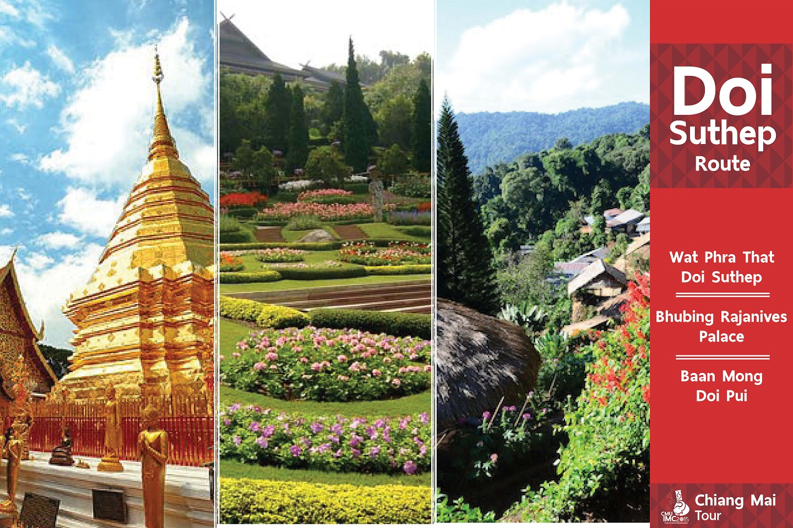
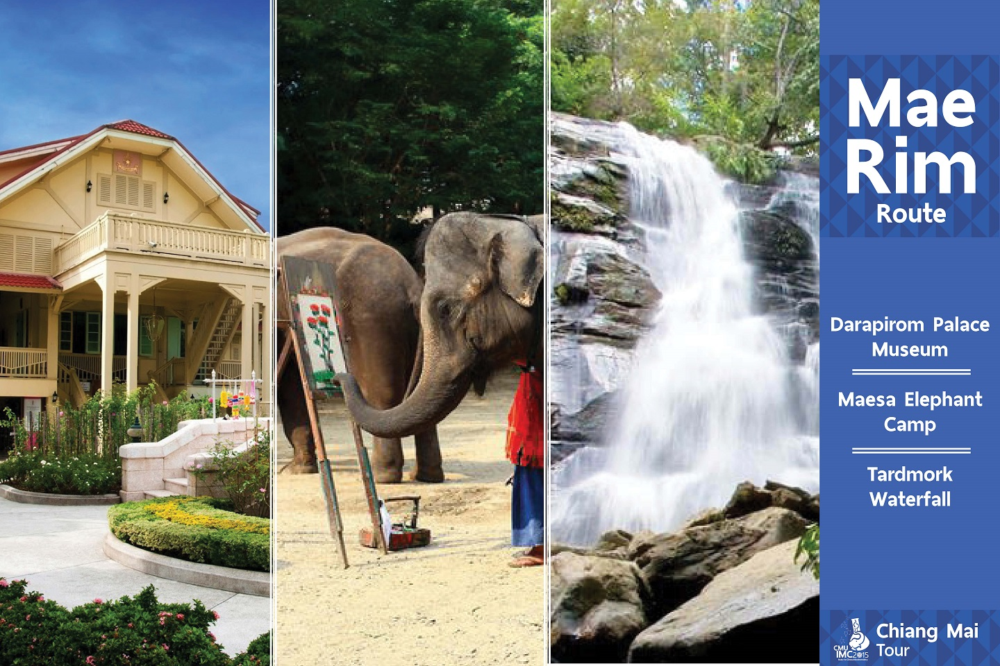

Chiang Mai Tour
Doi Suthep Route
With this route, you’ll experience an invaluable time with our one-day-trip. Not only to Wat Phra That Doi Suthep, which is one of the most famous temples in Chiang Mai, we will also visit Bhubing Rajanives Palace, a Royal Residence full of beautiful rose gardens you shouldn’t miss. Not choosing this trip, you will regret!

Wat Phra That Doi Suthep
Wat Phra That Doi Suthep is a Theravada Buddhist temple in Chiang Mai Province, Thailand. It has been a place of worship since it’s former times. The temple is often referred to as "Doi Suthep" although this is actually the name of the mountain where it's located. To reach the pagodas, visitors can walk 309 steps up a cement staircase decorated with seven head Nagas, or take a tram. The Lanna stylized temple above amusingly has a Chiang Saen chedi inside. Outside stands a luxurious stupa covered with two layers of golden leaves. From the temple, visitors can admire impressive views of the city. It might be said that a visit to Chiang Mai cannot be completed without a stop to Wat Phra That Doi Suthep.
Baan Mong Doi Pui
Baan Mong Doi Pui is located on Doi Suthep-Pui National park. Here, you can visit a museum which illustrates the folkways and flowers seen only in winter. As a highlight, there are bright colorful mong tribe's cloths to try and traditional souvenirs to pick up home.
Bhubing Rajanives Palace
Bhubing Rajanives Palace is a royal residence located in Doi Buak Ha, Muang District, Chiang Mai Province, Thailand. Located on Buak Ha Mountain, the climate here is cool throughout the year. The palace was built in 1961 to accommodate the royal family during state visits to the north. There is also a guesthouse for receiving foreign dignitaries. Outside the building, the rose gardens (Suan Suwaree) are particularly famous, and many flowers that cannot otherwise be grown in other parts of Thailand are found here. This place is surely suitable for those who adore fragrant and refreshing flowers and love taking photos.
Suggestion for visiting Bhubing Rajanives Palace
-
- Please do not make loud noises which will disturb the others
- Please wear appropriate clothes. Shorts, waistcoats and sleeveless shirts are not allowed.
- Keep off the grass and flower beds
- Do not pick the flowers or do any harm to the garden.
- Weapons are forbidden
Mae Hia Route

For the trip, we have now selected the best for you. Firstly, visit “Wat Ton Kwen”, a great model of refined Lanna arts. After that, experience a trip close to nature with the most remarkable flora exhibition at “Royal Flora Ratchaphruek”. Finally, finish the day with Chiang Mai night safari, a memorable nocturnal zoo. We are sure that you will have a special time in Chiang Mai, so say ‘Bon voyage’! And here we go.
Wat Ton Kwen
Awarded as ‘the Excellently Conserved Building’ in 1998*, Wat Ton Kwen is well known for its exotic and unique design. The temple’s highlight is the Main Hall, beautifully decorated with typical Lanna woodcarvings. There is also the Chaturamook Hall which is the one and only four-gabled pavilion of Thailand’s northern region.
* Awarded by the Association of Siamese Architect under Royal Patronage.
Royal Flora Ratchaphruek
Royal Flora Ratchaphruek is an outdoor flower exhibition. More than 2,200 species of plants are exhibited here which makes it one of the most attracting places in Chiang Mai. Not only many species of tropical trees and flowers are presented here, there are also indoor plants, an exhibition of New Theory Agriculture and the Insects World museum. The exhibition is highlighted by Ho Kham Royal Pavilion which was built in honor of King Bhumibol and his dedications.
Chiang Mai Night Safari Zoo
Chiang Mai night safari is a nocturnal zoo. The place is divided into many interesting zones including the Jaguar trail-a walking trail which people stroll along to see numerous animals in a close distance, the Savanna Safari-an exhibition of herbivore animals and the Predator Prowl- the carnivorous animal zone. Furthermore, there are also walking tracts in which you can explore various tropical plants and flowers. Finally, the Lanna-African stylized pavilions supports restaurants, stores, souvenir shops and a shuttle bus station.
Mae Rim Route
The more you travel the more experiences you gain. If you want to learn about northern Thai history, “Darapirom palace museum” is a good choice for you. After that, we will bring you to have fun with the elephants at Maesa elephant camp, and by the end of the day, you’ll surely be relaxing with the peaceful Tardmok waterfall. Come and join us. This trip is a must!
Dara Pirom Palace Museum
Dara Pirom was once the palace where Phra Ratchachaya Chao Dararasmi, one of the Royal consorts of King Rama V, lived in. She was a major influence in developing Lanna's handicrafts which has been Chiang Mai’s heritage of pride until today. This building was designed in a western art-and-crafts style. The museum exhibits gracious living quarters, textiles, furniture, person utensils and musical instruments which are related to Phra Ratchachaya Chao Dararasmi.
Maesa Elephant Camp
Maesa Elephant Camp is the first elephant camp in Thailand. You will be amazed at the abilities of the well-trained elephants. Get to feed the elephants with bananas and sugar cane, and then watch them take their bath before putting on a really entertaining show. The highlight here is a comfortable ride on an elephant through the jungle path.
Tardmork Waterfall
Tardmork waterfall is a medium size waterfall with abundance of floras in the forest. This beautiful 20-meter-high waterfall is located in Suthep-Pui national park. We will finish our trip relaxing here, resting while enjoying the beautiful scenario of nature.
Maps
: CMU-IMC2015 : Doi Suthep Route : Mae Hia Route : Mae Rim Route